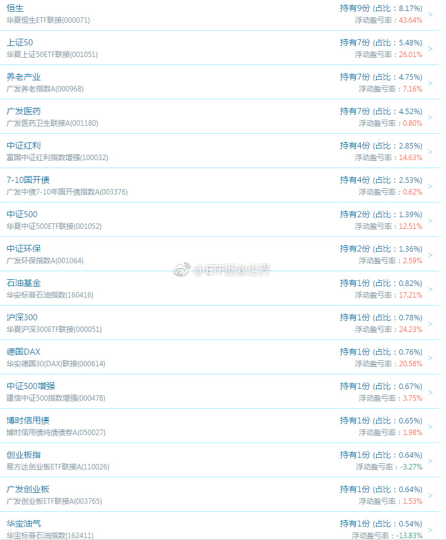

你给的价格太高，人家当然要套现。没人买，跌到大股东不愿意套的时候，自然就没人套了，甚至还会增持。维持股市高价格高估值，让股民高位用这些垃圾价格炒来炒去，是解决问题的方法？@叶檀:参加网易经济学家年会，跟水皮先生辩（交）论（流），不必停止IPO，要应对的是套现
回复@chrismixxx:我说的是正常情况下。比如2015年7月分级A那种情况，我会100%买入。然而那种情况几年才能碰到一次。正常情况下，这是我的原则。非极端情况下，我对自己没那么大的信心——非常看好的一定会大涨。我相信也没有几个人能总是看好就肯定涨。长期来看，不可能。@ETF拯救世界:$159938 目前计划的第二大并列重仓基金。无论如何，不管发生什么，除非买的时候就是为了做波段，否则不要卖。不要卖。不要卖。说三遍。
回复@刘泽瑜31881:有些话我说过不止一次。仓位是适合我的，也是适合一部分朋友的，但不是适合所有朋友的。觉得低的，我买一份可以买两份甚至三份。我不能让所有朋友感到舒服。//@刘泽瑜31881:我觉得现在不是浮亏的问题而是有可能仓位问题！@ETF拯救世界:醉了，除了仓位低的两个，都是红的。我再说一次，计划里的任何品种，未来，某一天，浮亏十几个点，一点点都不用担心。千万不要随便卖。因为牛市来了，一周两周就分分钟盈利。这话说过很多次，还要再说。 
回复@xeon_xiaohai:没有。同一类别的小类资产总量绝不超过20%。比如50和300是一个小类，医药和养老算一个小类，石油基金和华宝油气算一个//@xeon_xiaohai:E大，每个品种购买的份数有上限吗，如果有的话上限是多少份？@ETF拯救世界:$159938 目前计划的第二大并列重仓基金。无论如何，不管发生什么，除非买的时候就是为了做波段，否则不要卖。不要卖。不要卖。说三遍。
回复@Tony_RUC:肯定是赚钱了，至少在1%左右。你并不熟悉普通投资者的心态。一个品种浮亏，回本后马上就想卖出，害怕再次浮亏，坐过山车。所以我会在回本的时候提醒：不要卖。//@Tony_RUC:根本没涨，卖啥卖啊，老大………没赚钱啊！@ETF拯救世界:$159938 目前计划的第二大并列重仓基金。无论如何，不管发生什么，除非买的时候就是为了做波段，否则不要卖。不要卖。不要卖。说三遍。